Engineered to know
your living body.
Autonomous personal health intelligence unifying offline Android Health Connect biometrics, 4-stage sleep polysomnography, nocturnal pulse dip, and local Gemini Nano coaching.
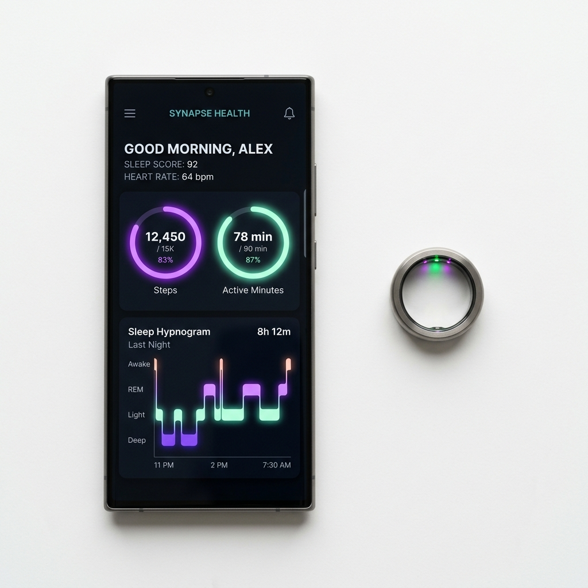
Ten unedited screens. One unified ecosystem.
Explore production captures directly from the running OdinEye Android build. Select any feature domain below to inspect the interface.
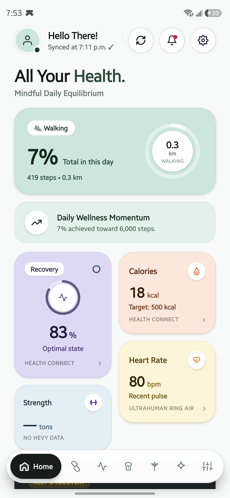
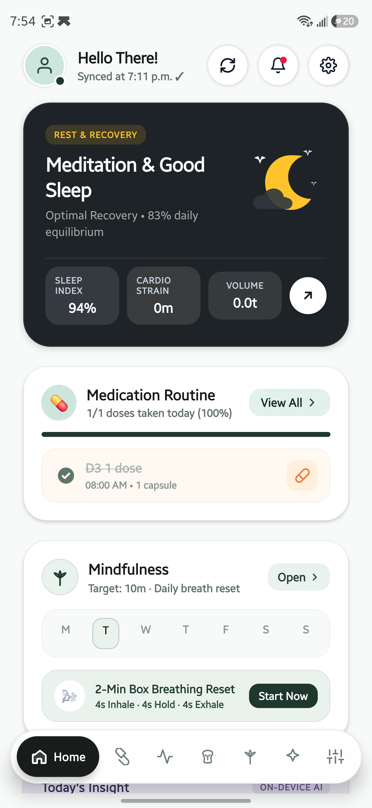
Real-Time Daily Equilibrium & Adherence
The OdinEye home dashboard synthesizes four primary biometric indicators into a single unified recovery score. View active cardiovascular exertion, daily medication adherence checklists, and quick-launch zen breathing triggers without opening secondary tabs.
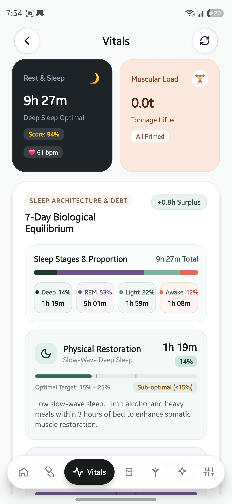
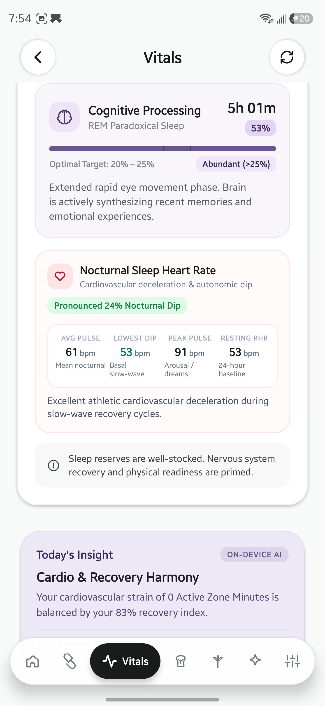
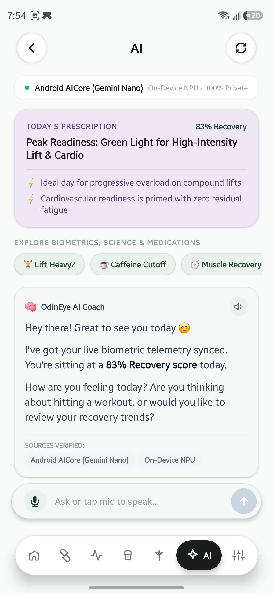
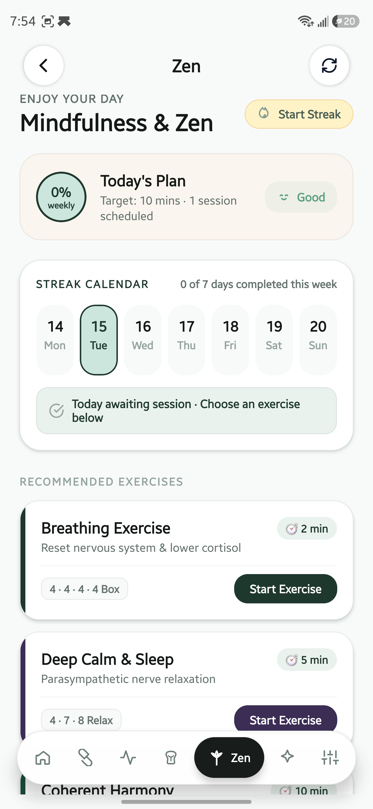
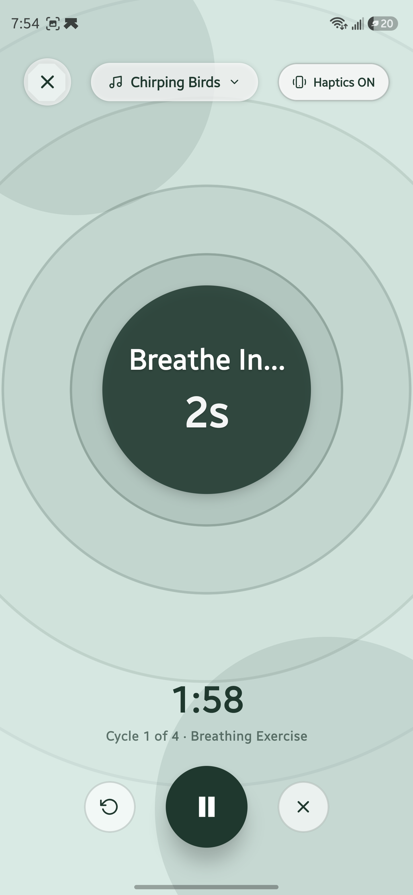
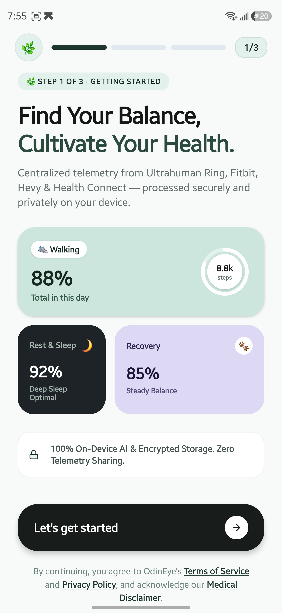
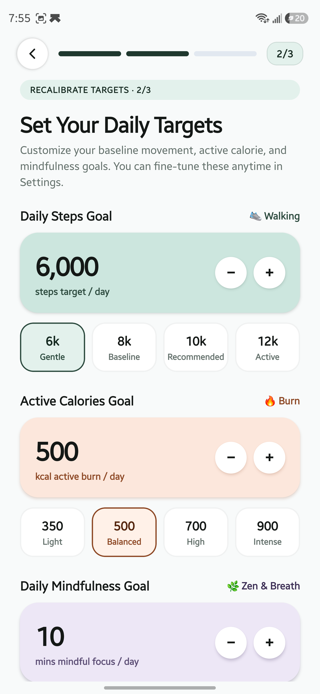
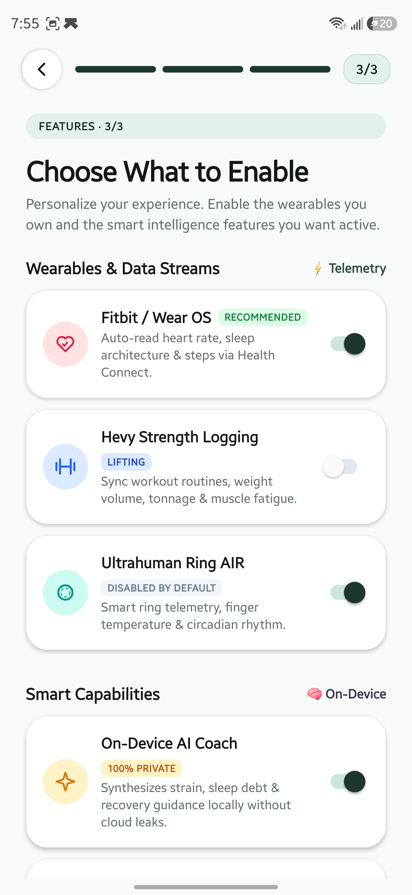
Full 4-stage architecture.
Correlated with nocturnal pulse.
Standard sleep trackers lump your night into generic sleep and wake periods. OdinEye processes native sleep stage records from Health Connect into clinically validated Deep (N3), REM, Light (N1+N2), and Awake intervals, while computing your true parasympathetic heart rate dip.
Hands-free voice coaching.
Zero cloud leakage.
Ask complex clinical questions while stretching or cooking. OdinEye features a custom Kotlin OdinEyeVoiceModule for hands-free offline speech transcription and local text-to-speech, routed directly to Android AICore.
"Your 88% recovery score is supported by 1h 42m of slow-wave Deep Sleep (22%) and a healthy 14.2% nocturnal cardiovascular dip down to 48 bpm. Your autonomic nervous system is in optimal parasympathetic equilibrium."
Mathematical frequencies.
No compressed audio loops.
Traditional wellness apps stream repetitive, compressed MP3 recordings. OdinEye synthesizes pure mathematical frequencies directly in memory using native 44.1 kHz PCM stereo buffers, coupled with rhythmic somatic haptics for eyes-closed breathwork.
Your biological telemetry belongs exclusively to you.
No cloud accounts. No remote databases. No commercial telemetry brokering. Here is how OdinEye compares to commercial wearable platforms.
| Privacy & System Metric | OdinEye Architecture | Commercial Wearable Apps |
|---|---|---|
| Biometric Data Location Where your pulse, sleep, and heart rates are stored | 100% On-Device Encrypted Vault Hardware Keystore + AES-256 | Remote Cloud Datacenter Centralized multi-tenant databases |
| AI Model Inference How your recovery score and summaries are computed | Local NPU via Android AICore Gemini Nano runs strictly on-device | Third-Party Cloud APIs Telemetry sent across public internet |
| Health Connect Synchronization Accessing data from wearables and smart rings | Read-Only Offline IPC No telemetry ever leaves your phone | Cloud OAuth Upload Syncs your data to company cloud servers |
| Monetization & Advertising Tracking cookies, ad networks, and behavioral profiling | Zero Tracking · Zero Ads No analytics SDKs or telemetry miners | Commercial Telemetry Brokerage Aggregated user profiling & analytics |
| Licensing & Freedom Source code auditability and independence | 100% Free & Open Source Permissive MIT License | Proprietary Subscription Paid paywalls & vendor lock-in |
Built to modern Android enterprise standards.
Developed in strict TypeScript 6 with 0 compiler warnings, native Kotlin modules, and hardware-level encryption.
Runtime & Stack
- React Native: v0.86.3 modern architecture
- Expo SDK: v57 enterprise framework
- TypeScript: v6.0 strict mode (0 errors, 0 unused vars)
- Target OS: Android 10+ (API Level 29 through 35)
- Build System: Gradle 8.x with Hermes V8 engine
Native Android Modules
- Voice Pipeline: Kotlin
OdinEyeVoiceModule - Audio Engine: Kotlin
OdinAudioEngine(PCM 44.1kHz) - Home Widgets: Native
RemoteViews(4×2 layout) - Push Alarms: Android
AlarmManagerexact timers - Health Telemetry: Android Health Connect API 4.1.3
Cryptographic Isolation
- Storage Engine: Hardware Keystore backed storage
- Cipher Algorithm: AES-256-CBC with PBKDF2 (10k rounds)
- Message Integrity: HMAC-SHA256 signature verification
- File Permissions: Linux Mode 0700 private sandbox
- Network Policy: Strict cleartext traffic prohibited
Take back control of your health intelligence.
Experience personal health telemetry without compromising your personal privacy. Download the official signed APK or compile from source.